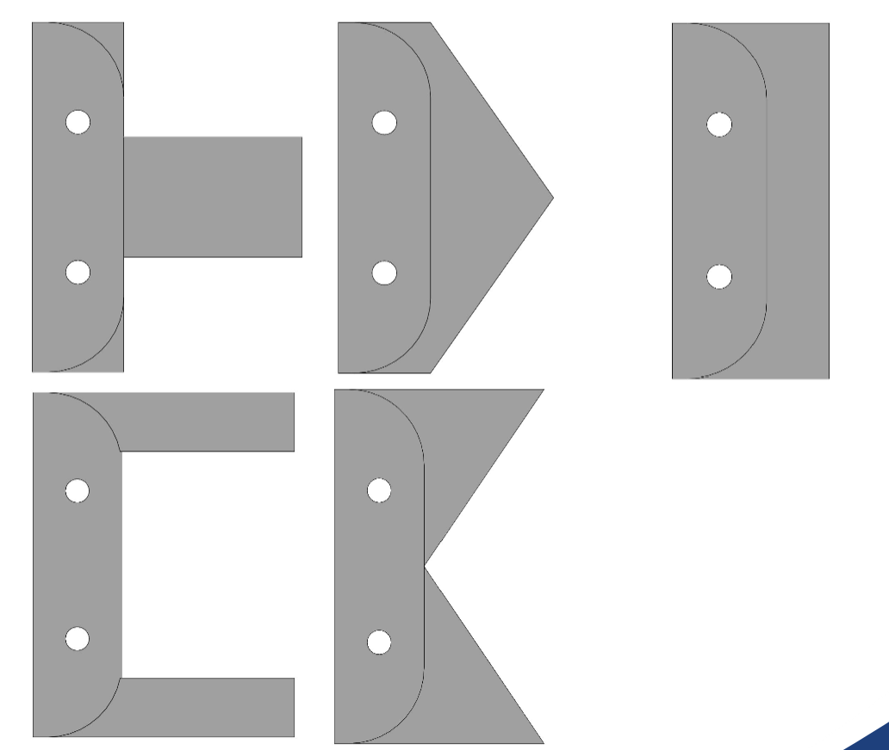
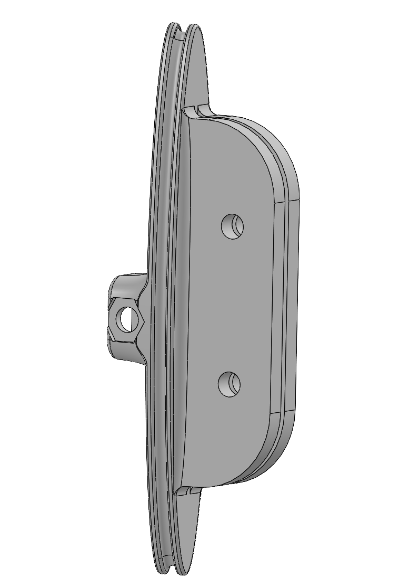

01 / Research · Ongoing
MuBot: Caudal Peduncle Design & Testing
Biomimetic robotic fish research · Penn State BioRob InFL Lab
Overview
MuBot is a biomimetic robotic fish research project within Penn State’s BioRob InFL Lab. Within the larger faculty and graduate student led research program, my work focuses on the design and experimental evaluation of the caudal peduncle, with lead responsibility for my assigned undergraduate research scope.
Research question
Which dorsoventral material distributions in the caudal peduncle perform best across a range of swimming frequencies while remaining within the project’s design constraints?
The current study compares candidate configurations and gathers swimming performance data to guide further design work.
Geometry study
The current study compares five peduncle/material-distribution concepts: Rectangle, Mid, Edge, Triangle, and Inverted Triangle. Peduncle length and area moments of inertia about the x- and y-axes are used to characterize the side-view geometry and provide measurable design parameters for comparing the concepts.

Experimental Setup & Testing
Testing takes place in a large water tank using MATLAB code and a custom infrared tracking system. The work gathers experimental swimming-performance data across different peduncle configurations and operating frequencies.
CAD / Design development
SolidWorks is used to develop each peduncle concept within the geometry and interface constraints of the existing MuBot platform. The CAD models allow new designs to be checked for fit and compatibility with the existing robot before fabrication. Once finalized, the models are used to 3D print the physical peduncle designs for experimental testing.

Next step
The current research will help identify which designs within the explored design space perform best under different swimming conditions. These results will then inform the development of a thermally tunable peduncle, using controlled changes in stiffness distribution to optimize swimming performance for burst acceleration, turning, and cruising.